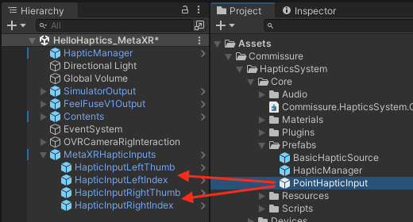

4. FF-SDK-Unity application development
4.1. FF-SDK-Unity basics of development
The basic flow of FF-SDK-Unity application development is as follows. (It is assumed that the FF-SDK-Unity setup is already complete.)
Place HapticManager prefab into a scene
Place Assets/Commissure/HapticsSystem/Core/Prefabs/HapticManager into the scene.

Place arbitrary HapticOutput-related prefab into the scene
Place a Prefab such as Assets/Commissure/HapticsSystem/Devices/FeelFuseV1/Prefabs/FeelFuseV1Output into the scene.

To see the types of HapticOutput and their descriptions, please refer to 4.3.2. HapticOutput.Link HapticManager and HapticOutput
Set HapticOutput placed into the scene to Outputs field at the HapticManager Inspector.
In the image below, the two HapticOutput are connected.
This enables haptic feedback to be delivered to two output destinations.

Place arbitrary HapticInput-related prefab into the scene
Place a Prefab such as Assets/Commissure/HapticsSystem/Core/Prefabs/PointHapticInput into the scene.
In the diagram below, four HapticInputs are placed.
If you use MetaQuest, use MetaXRHapticInputs.prefab in 4.4. UI development helper. Set up HapticInput
PointHapticInput has a setting for which part of the human body corresponds to, so configure it appropriately.
Attach the HapticSource-related component to the object where you want to generate haptic feedback
Attach 3 components, HapticSource, FingerVibrationSource, and HapticForceSource.
HapticSource uses the Collider, so attach the Collider-related component as well.
In the following example, attach BasicFingerVibrationSource, which generates basic vibration haptics, and GravityHapticForceSource, which generates gravity haptics.

Modify various paramaters to customize the haptic feedback
Configure settings such as AudioClip to generate vibrations.
4.2. Customize haptics
To customize haptics feedback, you can modify the settings of the HapticsSource-related components provided by SDK in the Inspector, change properties via code, or create custom components.
To implement a custom component, create a class that implements the interface below, and attach it to a GameObject which is same as the HapticSource.
| Interface | Description |
|---|---|
| IFingerVibrationSource | Interface of vibration haptic source |
| IHapticForceSource | Interface of shear haptic source |
4.3. Components provided by SDK
Components provided by SDK are placed under Commissure/HapticsSystem/ as below.
4.3.1. HapticInput
| Component | Description |
|---|---|
| Core/Prefabs/PointHapticInput.prefab | Point input |
4.3.2. HapticOutput
| Component | Description |
|---|---|
| Devices/Simulator/Prefabs/SimulatorOutput.prefab | Simulator that allows you to visually check haptic output on the screen |
| Devices/FeelFuseV1/Prefabs/FeelFuseV1Output.prefab | Output for FeelFuse devices |
| Devices.Windows/FeelFuseV0/Prefabs/FeelFuseV0Output.prefab | Output for FeelFuse devices with USB wired connection |
4.3.3. FingerVibrationSource
| Component | Description |
|---|---|
| Core/Scripts/HapticSources/FingerVibration/BasicFingerVibrationSource.cs | Output single vibration audio |
| Core/Scripts/HapticSources/HapticForce/GravityHapticForceSource.cs | Enable to switch between multiple audio clips for output |
4.3.4. HapticForceSource
| Component | Description |
|---|---|
| Core/Scripts/HapticSources/FingerVibration/BasicFingerVibrationSource.cs | Output gravity |
| Core/Scripts/HapticSources/HapticForce/LinearResistanceHapticForceSource.cs | Output linear resistive force |
| Core/Scripts/HapticSources/HapticForce/TwoPointHapticForceSource.cs | Output force based on the distance between two points |
4.4. UI development helper
Helper components useful for the application development are provided under Assets/Commissure/HapticsSystem.
| Component | Description |
|---|---|
| UI/Scripts/GenericGrabbable.cs | The action of grabbing an object to which HapticSource is attached Attach it to the same GameObject as HapticSource and use it If the device-side SDK, such as Meta Quest, provides a grabbing action, setting the triggerOnly field to true allows detection of haptic feedback only |
| UI.MetaXR/Prefabs/MetaXRHapticInputs.prefab | An object that attaches HapticInput to the fingertips of the Hand model provided by Meta XR SDK and automatically follows their movement Place into a scene and use it |
| UI.TofAr/Prefabs/TofARCamera.prefab | An object that attaches HapticInput to the fingertips of the Hand model provided by ToF AR SDK and automatically follows their movement Place into a scene and use it |
4.4.1. MetaXRHapticInputs setting
- Place UI.MetaXR/Prefabs/MetaXRHapticInputs.prefab into a scene.
- Set the reference for the Hand field of the HandJoint component attached to the four of HapticInput under MetaXRHapticInputs.
Set the reference destination as follows.
| Component | Reference destination |
|---|---|
| HapticInputLeftThumb | LeftHandSynthetic |
| HapticInputLeftIndex | LeftHandSynthetic |
| HapticInputRightThumb | RightHandSynthetic |
| HapticInputRightIndex | RightHandSynthetic |
- Set the value of the Joint Id field of the HandJoint component attached to the four of HapticInput under MetaXRHapticInputs.
Set the value as follows.
| Component | Joint Id Value |
|---|---|
| HapticInputLeftThumb | Hand Thumb Tip |
| HapticInputLeftIndex | Hand Index Tip |
| HapticInputRightThumb | Hand Thumb Tip |
| HapticInputRightIndex | Hand Index Tip |
4.5. Development and debugging support
You can use ToF AR SDK to streamline development and debugging with hand tracking without wearing a head-mounted display.
- Download ToF AR Server from App Store on ToF AR compatible devices (iPhones or iPad Pros that support Face ID).
https://apps.apple.com/jp/app/tof-ar-server/id1613866652 - Place TofArCamera.prefab into a scene.
- Connect your smartphone and the PC running Unity to the same network.
- Launch ToF AR Server on your smartphone and check IP address displayed on the application.

- Set that IP address in the Debug Server IP Address field of TofArCamera/TofArManager in the scene's Inspector.

- Restart the Unity Editor.
After complementing the above settings, playing the scene will enable hand trackiing using the Face ID camera on the smartphone. This allows to intract with objects by touching or grabbing them while developing and debugging.
4.6. FeelFuse with USB wired connection setting
FeelFuse with USB wired connection performs communication by using the COM port of a Windows PC.
Specify the COM port used by communication at SerialPort_Left or SerialPort_Right Inspector under FeelFuseV0Output object.
The settings are automatically saved locally on the PC, so reconfiguration is not required on the next startup.